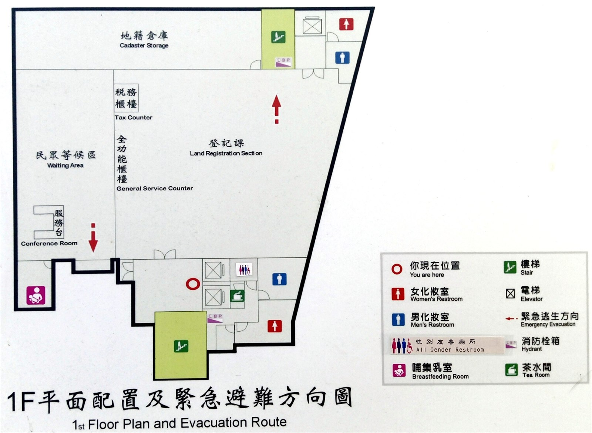

桃園市蘆竹地政事務所
樓層語音導覽
服務轄區：蘆竹區・大園區 ｜ 1F 登記櫃檯・2F 地價行政・3F 測量資訊
竹竹
圓圓
A+
大字
A++
特大
🔊
歡迎導覽
🔍
總覽
大樓樓層一覽
1F
登記・全功能櫃檯
2F
地價・行政檔案
3F
測量・資訊空間
BUILDING DIRECTORY
桃園市蘆竹地政事務所｜全館樓層配置總覽
🎧
聽全館導覽簡介
1F
一樓｜登記與便民櫃檯
1st Floor — Registration & General Services
🗣️
本層總覽語音
🚶
帶逛本層
－
100%
＋
全部空間
洽公櫃檯
業務課室
便民設施
💡 點擊平面圖上的彩色標點，即可查看業務並聽語音介紹

本樓層空間一覽
9 處
點選下方任一項目可同步高亮地圖位置
1F
竹竹導覽中
一樓｜登記與便民櫃檯
▶ 播放
看介紹